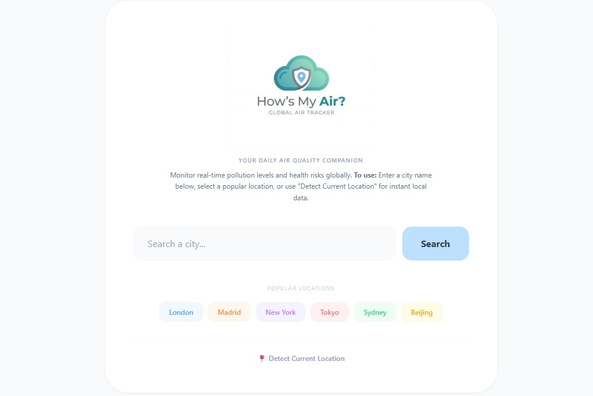
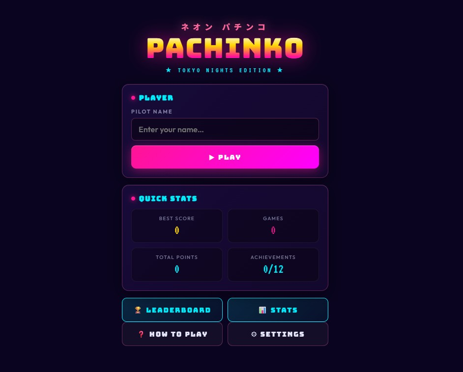

Product Manager
I’ve spent my career helping major brands like TUI, Holland & Barrett, and M&S build better digital experiences. Most recently at TUI, I’ve been leading squads to improve how customers discover holidays using AI and SEO. Before that, I was at Holland & Barrett, where I optimised their loyalty scheme and supported discovery of a new loyalty offering. I also spent time at Marks & Spencer, focusing on making the Sparks loyalty program more rewarding for members and exploring new premium membership tiers. I actually started my product journey in digital experience management at Interactive Schools, where I managed the launch of over 50 websites annually for schools globally.

A tool to help people understand the air quality in their area. Using an open source air quality API and location tracking to let users locate their exact location data.
View Project
Pachinko style game that I wanted to create due to a lack of available free to play options online.
View ProjectBeyond product management, I enjoy staying active and exploring new technologies. Whether it's testing the latest AI tools or diving into a new hobby, I'm always looking for ways to learn and grow outside the office.